UIAxes Properties
UI axes appearance and behavior
UIAxes properties control the appearance and
behavior of a UIAxes object. By changing property
values, you can modify certain aspects of the axes.
ax = uiaxes;
ax.Color = 'blue';The properties listed here are valid for axes in App Designer, or in figures created
with the uifigure function. For axes used in GUIDE, or in apps
created with the figure function, see Axes Properties.
Font
Ticks
Rulers
Selection mode for the axis limits, specified as one of these values:
'auto'— Enable automatic limit selection, which is based on the total span of the plotted data and the value of theXLimitMethod,YLimitMethod, orZLimitMethodproperty.'manual'— Manually specify the axis limits. To specify the axis limits, set theXLim,YLim, orZLimproperty.
Example: ax.XLimMode = 'auto'
Axis limit selection method, specified as a value from the table. The examples in the table show the approximate appearance for different values of the XLimitMethod property. Your results might differ depending on your data, the size of the axes, and the type of plot you create.
| Value | Description | Example (XLimitMethod) |
|---|---|---|
'tickaligned' | In general, align the edges of the axes box with the tick marks that are closest to your data without excluding any data. The appearance might vary depending on the type of data you plot and the type of chart you create. |
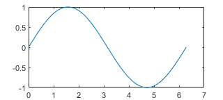 |
'tight' | Fit the axes box tightly around the data by setting the axis limits equal to the range of the data. |
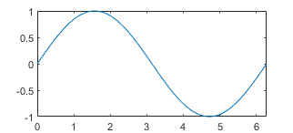 |
'padded' | Fit the axes box around the data with a thin margin of padding on each side. The width of the margin is approximately 7% of your data range. |
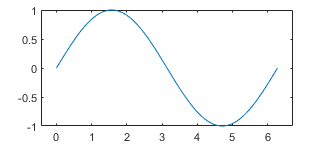 |
Note
The axis limit method has no effect when the corresponding mode property (XLimMode, YLimMode, or ZLimMode) is set to 'manual'.
Axis ruler, returned as a ruler object. The ruler controls the appearance and behavior of the x-axis, y-axis, or z-axis. Modify the appearance and behavior of a particular axis by accessing the associated ruler and setting ruler properties. The type of ruler that MATLAB creates for each axis depends on the plotted data. For a list of ruler properties, see:
For example, access the ruler for the x-axis through
the XAxis property. Then, change the
Color property of the ruler, and thus the color of
the x-axis, to red. Similarly, change the color of the
y-axis to
green.
ax = gca; ax.XAxis.Color = 'r'; ax.YAxis.Color = 'g';
Axes object has two y-axes, then the
YAxis property stores two ruler objects.x-axis location, specified as one of the values in this table. This property applies only to 2-D views.
| Value | Description | Result |
|---|---|---|
'bottom' | Bottom of the axes. Example:
| 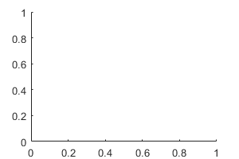 |
'top' | Top of the axes. Example:
| 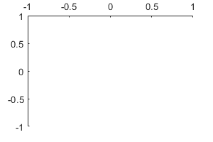 |
'origin' | Through the origin point (0,0). Example:
| 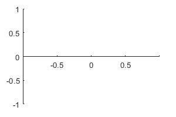 |
y-axis location, specified as one of the values in this table. This property applies only to 2-D views.
| Value | Description | Result |
|---|---|---|
'left' | Left side of the axes. Example:
| 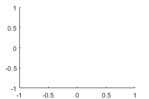 |
'right' | Right side of the axes. Example:
| 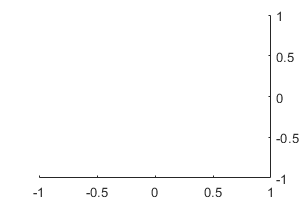 |
'origin' | Through the origin point (0,0). Example:
| 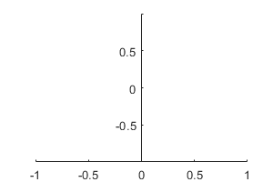 |
Color of the axis line, tick values, and labels in the
x, y, or
z direction, specified as an RGB triplet, a
hexadecimal color code, a color name, or a short name. The color also
affects the grid lines, unless you specify the grid line color using the
GridColor or MinorGridColor
property.
For a custom color, specify an RGB triplet or a hexadecimal color code.
An RGB triplet is a three-element row vector whose elements specify the intensities of the red, green, and blue components of the color. The intensities must be in the range
[0,1], for example,[0.4 0.6 0.7].A hexadecimal color code is a string scalar or character vector that starts with a hash symbol (
#) followed by three or six hexadecimal digits, which can range from0toF. The values are not case sensitive. Therefore, the color codes"#FF8800","#ff8800","#F80", and"#f80"are equivalent.
Alternatively, you can specify some common colors by name. This table lists the named color options, the equivalent RGB triplets, and the hexadecimal color codes.
| Color Name | Short Name | RGB Triplet | Hexadecimal Color Code | Appearance |
|---|---|---|---|---|
"red" | "r" | [1 0 0] | "#FF0000" |
|
"green" | "g" | [0 1 0] | "#00FF00" |
|
"blue" | "b" | [0 0 1] | "#0000FF" |
|
"cyan"
| "c" | [0 1 1] | "#00FFFF" |
|
"magenta" | "m" | [1 0 1] | "#FF00FF" |
|
"yellow" | "y" | [1 1 0] | "#FFFF00" |
|
"black" | "k" | [0 0 0] | "#000000" |
|
"white" | "w" | [1 1 1] | "#FFFFFF" |
|
"none" | Not applicable | Not applicable | Not applicable | No color |
This table lists the default color palettes for plots in the light and dark themes.
| Palette | Palette Colors |
|---|---|
Before R2025a: Most plots use these colors by default. |
|
|
|
You can get the RGB triplets and hexadecimal color codes for these palettes using the orderedcolors and rgb2hex functions. For example, get the RGB triplets for the "gem" palette and convert them to hexadecimal color codes.
RGB = orderedcolors("gem");
H = rgb2hex(RGB);Before R2023b: Get the RGB triplets using RGB =
get(groot,"FactoryAxesColorOrder").
Before R2024a: Get the hexadecimal color codes using H =
compose("#%02X%02X%02X",round(RGB*255)).
Example: ax.XColor = [1 1 0]
Example: ax.YColor = 'yellow'
Example: ax.ZColor = '#FFFF00'
Property for setting the x-axis grid color, specified
as 'auto' or 'manual'. The mode value
only affects the x-axis grid color. The
x-axis line, tick values, and labels always use the
XColor value, regardless of the mode.
The x-axis grid color depends on both the
XColorMode property and the
GridColorMode property, as shown
here.
| XColorMode | GridColorMode | x-Axis Grid Color |
|---|---|---|
'auto' | 'auto' | GridColor property |
'manual' | GridColor property | |
'manual' | 'auto' | XColor property |
'manual' | GridColor property |
The x-axis minor grid color depends on both the
XColorMode property and the
MinorGridColorMode property, as shown
here.
| XColorMode | MinorGridColorMode | x-Axis Minor Grid Color |
|---|---|---|
'auto' | 'auto' | MinorGridColor property |
'manual' | MinorGridColor property | |
'manual' | 'auto' | XColor property |
'manual' | MinorGridColor property |
Property for setting the y-axis grid color, specified
as 'auto' or 'manual'. The mode value
only affects the y-axis grid color. The
y-axis line, tick values, and labels always use the
YColor value, regardless of the mode.
The y-axis grid color depends on both the
YColorMode property and the
GridColorMode property, as shown
here.
| YColorMode | GridColorMode | y-Axis Grid Color |
|---|---|---|
'auto' | 'auto' | GridColor property |
'manual' | GridColor property | |
'manual' | 'auto' | YColor property |
'manual' | GridColor property |
The y-axis minor grid color depends on both the
YColorMode property and the
MinorGridColorMode property, as shown
here.
| YColorMode | MinorGridColorMode | y-Axis Minor Grid Color |
|---|---|---|
'auto' | 'auto' | MinorGridColor property |
'manual' | MinorGridColor property | |
'manual' | 'auto' | YColor property |
'manual' | MinorGridColor property |
Property for setting the z-axis grid color, specified
as 'auto' or 'manual'. The mode value
only affects the z-axis grid color. The
z-axis line, tick values, and labels always use the
ZColor value, regardless of the mode.
The z-axis grid color depends on both the
ZColorMode property and the
GridColorMode property, as shown
here.
| ZColorMode | GridColorMode | z-Axis Grid Color |
|---|---|---|
'auto' | 'auto' | GridColor property |
'manual' | GridColor property | |
'manual' | 'auto' | ZColor property |
'manual' | GridColor property |
The z-axis minor grid color depends on both the
ZColorMode property and the
MinorGridColorMode property, as shown
here.
| ZColorMode | MinorGridColorMode | z-Axis Minor Grid Color |
|---|---|---|
'auto' | 'auto' | MinorGridColor property |
'manual' | MinorGridColor property | |
'manual' | 'auto' | ZColor property |
'manual' | MinorGridColor property |
x-axis direction, specified as one of these values.
| Value | Description | Result in 2-D | Result in 3-D |
|---|---|---|---|
'normal' | Values increase from left to right. Example:
| 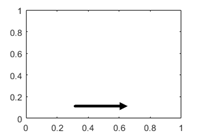 | 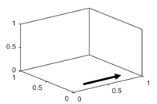 |
'reverse' | Values increase from right to left. Example:
| 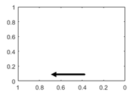 | 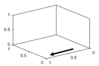 |
y-axis direction, specified as one of these values.
| Value | Description | Result in 2-D | Result in 3-D |
|---|---|---|---|
'normal' | Values increase from bottom to top (2-D view) or front to back (3-D view). Example:
| 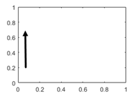 | 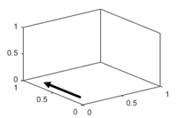 |
'reverse' | Values increase from top to bottom (2-D view) or back to front (3-D view). Example:
| 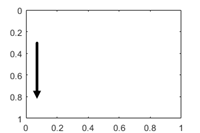 | 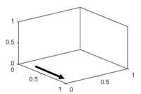 |
z-axis direction, specified as one of these values.
| Value | Description | Result in 3-D |
|---|---|---|
'normal' | Values increase pointing out of the screen (2-D view) or from bottom to top (3-D view). Example:
|
|
'reverse' | Values increase pointing into the screen (2-D view) or from top to bottom (3-D view). Example:
|
|


Axis scale, specified as one of these values.
| Value | Description | Result |
|---|---|---|
'linear' | Linear scale Example:
|  |
'log' | Log scale Example:
Note The axes might exclude coordinates in some cases:
|  |
Grids
Grid lines, specified as 'on' or
'off', or as numeric or logical 1
(true) or 0
(false). A value of 'on' is
equivalent to true, and 'off' is
equivalent to false. Thus, you can use the value of this
property as a logical value. The value is stored as an on/off logical value
of type matlab.lang.OnOffSwitchState.
'on'— Display grid lines perpendicular to the axis; for example, along lines of constant x, y, or z values.'off'— Do not display the grid lines.
Alternatively, use the grid on or grid
off command to set all three properties to
'on' or 'off', respectively. For
more information, see grid.
Example: ax.XGrid = 'on'
Line style for grid lines, specified as one of the line styles in this table.
| Line Style | Description | Resulting Line |
|---|---|---|
"-" | Solid line |
|
"--" | Dashed line |
|
":" | Dotted line |
|
"-." | Dash-dotted line |
|
"none" | No line | No line |
To display the grid lines, use the grid on command or
set the XGrid, YGrid, or
ZGrid property to 'on'.
Example: ax.GridLineStyle = '--'
Since R2023a
Grid line width, specified as a positive number. Set this property or the MinorGridLineWidth property to control the thickness of the grid lines independently of the box outline and tick marks.
Example
Create vectors x and y, and plot them. Display the grid
lines in the axes by calling grid on. Increase the thickness of
the grid lines, box outline, and tick marks by setting the
LineWidth property of the axes to
1.5.
x = linspace(0,10);
y = sin(x);
plot(x,y)
grid on
ax = gca;
ax.LineWidth = 1.5;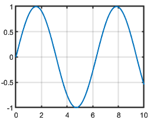
Make the grid lines thinner by setting the grid line width to 0.5.
ax.GridLineWidth = 0.5;
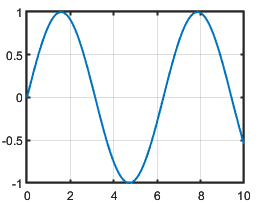
Since R2023a
How the grid line width is set, specified as one of these values:
"auto"— Set theGridLineWidthproperty to the same value as theLineWidthproperty."manual"— Hold the current value of theGridLineWidthproperty.
MATLAB sets this property to "manual" when you explicitly set
the GridLineWidth property to a value.
Color of grid lines, specified as an RGB triplet, a hexadecimal color code, a color name, or a short name.
For a custom color, specify an RGB triplet or a hexadecimal color code.
An RGB triplet is a three-element row vector whose elements specify the intensities of the red, green, and blue components of the color. The intensities must be in the range
[0,1], for example,[0.4 0.6 0.7].A hexadecimal color code is a string scalar or character vector that starts with a hash symbol (
#) followed by three or six hexadecimal digits, which can range from0toF. The values are not case sensitive. Therefore, the color codes"#FF8800","#ff8800","#F80", and"#f80"are equivalent.
Alternatively, you can specify some common colors by name. This table lists the named color options, the equivalent RGB triplets, and the hexadecimal color codes.
| Color Name | Short Name | RGB Triplet | Hexadecimal Color Code | Appearance |
|---|---|---|---|---|
"red" | "r" | [1 0 0] | "#FF0000" |
|
"green" | "g" | [0 1 0] | "#00FF00" |
|
"blue" | "b" | [0 0 1] | "#0000FF" |
|
"cyan"
| "c" | [0 1 1] | "#00FFFF" |
|
"magenta" | "m" | [1 0 1] | "#FF00FF" |
|
"yellow" | "y" | [1 1 0] | "#FFFF00" |
|
"black" | "k" | [0 0 0] | "#000000" |
|
"white" | "w" | [1 1 1] | "#FFFFFF" |
|
"none" | Not applicable | Not applicable | Not applicable | No color |
This table lists the default color palettes for plots in the light and dark themes.
| Palette | Palette Colors |
|---|---|
Before R2025a: Most plots use these colors by default. |
|
|
|
You can get the RGB triplets and hexadecimal color codes for these palettes using the orderedcolors and rgb2hex functions. For example, get the RGB triplets for the "gem" palette and convert them to hexadecimal color codes.
RGB = orderedcolors("gem");
H = rgb2hex(RGB);Before R2023b: Get the RGB triplets using RGB =
get(groot,"FactoryAxesColorOrder").
Before R2024a: Get the hexadecimal color codes using H =
compose("#%02X%02X%02X",round(RGB*255)).
To set the colors for the axes box outline, use the
XColor, YColor, and
ZColor properties.
To display the grid lines, use the grid on command or
set the XGrid, YGrid, or
ZGrid property to 'on'.
Example: ax.GridColor = [0 0 1]
Example: ax.GridColor = 'blue'
Example: ax.GridColor = '#0000FF'
Property for setting the grid color, specified as one of these values:
'auto'— Check the values of theXColorMode,YColorMode, andZColorModeproperties to determine the grid line colors for the x, y, and z directions.'manual'— UseGridColorto set the grid line color for all directions.
Minor grid lines, specified as 'on' or
'off', or as numeric or logical 1
(true) or 0
(false). A value of 'on' is
equivalent to true, and 'off' is
equivalent to false. Thus, you can use the value of this
property as a logical value. The value is stored as an on/off logical value
of type matlab.lang.OnOffSwitchState.
'on'— Display grid lines aligned with the minor tick marks of the axis. You do not need to enable minor ticks to display minor grid lines.'off'— Do not display grid lines.
Alternatively, use the grid minor command to toggle the
visibility of the minor grid lines.
Example: ax.XMinorGrid = 'on'
Line style for minor grid lines, specified as one of the line styles shown in this table.
| Line Style | Description | Resulting Line |
|---|---|---|
"-" | Solid line |
|
"--" | Dashed line |
|
":" | Dotted line |
|
"-." | Dash-dotted line |
|
"none" | No line | No line |
To display minor grid lines, use the grid minor command
or set the XMinorGrid, YMinorGrid,
or ZMinorGrid property to
'on'.
Example: ax.MinorGridLineStyle = '-.'
Since R2023a
Minor grid line width, specified as a positive number. Set this
property or the GridLineWidth property to control the thickness of the grid lines
independently of the box outline and tick marks.
Tip
To see the minor grid lines, set the
XMinorGrid,YMinorGrid, orZMinorGridproperties to"on".When you set the
GridLineWidthproperty, MATLAB also sets theMinorGridLineWidthproperty to the same value. To avoid changing theMinorGridLineWidthproperty, set theMinorGridLineWidthModeproperty to"manual"before setting theGridLineWidthproperty.
Since R2023a
How the minor grid line width is set, specified as one of these values:
"auto"— Set theMinorGridLineWidthproperty to the same value as theGridLineWidthproperty."manual"— Hold the current value of theMinorGridLineWidthproperty.
MATLAB sets this property to "manual" when you explicitly set
the MinorGridLineWidth property to a value.
Color of minor grid lines, specified as an RGB triplet, a hexadecimal color code, a color name, or a short name.
For a custom color, specify an RGB triplet or a hexadecimal color code.
An RGB triplet is a three-element row vector whose elements specify the intensities of the red, green, and blue components of the color. The intensities must be in the range
[0,1], for example,[0.4 0.6 0.7].A hexadecimal color code is a string scalar or character vector that starts with a hash symbol (
#) followed by three or six hexadecimal digits, which can range from0toF. The values are not case sensitive. Therefore, the color codes"#FF8800","#ff8800","#F80", and"#f80"are equivalent.
Alternatively, you can specify some common colors by name. This table lists the named color options, the equivalent RGB triplets, and the hexadecimal color codes.
| Color Name | Short Name | RGB Triplet | Hexadecimal Color Code | Appearance |
|---|---|---|---|---|
"red" | "r" | [1 0 0] | "#FF0000" |
|
"green" | "g" | [0 1 0] | "#00FF00" |
|
"blue" | "b" | [0 0 1] | "#0000FF" |
|
"cyan"
| "c" | [0 1 1] | "#00FFFF" |
|
"magenta" | "m" | [1 0 1] | "#FF00FF" |
|
"yellow" | "y" | [1 1 0] | "#FFFF00" |
|
"black" | "k" | [0 0 0] | "#000000" |
|
"white" | "w" | [1 1 1] | "#FFFFFF" |
|
"none" | Not applicable | Not applicable | Not applicable | No color |
This table lists the default color palettes for plots in the light and dark themes.
| Palette | Palette Colors |
|---|---|
Before R2025a: Most plots use these colors by default. |
|
|
|
You can get the RGB triplets and hexadecimal color codes for these palettes using the orderedcolors and rgb2hex functions. For example, get the RGB triplets for the "gem" palette and convert them to hexadecimal color codes.
RGB = orderedcolors("gem");
H = rgb2hex(RGB);Before R2023b: Get the RGB triplets using RGB =
get(groot,"FactoryAxesColorOrder").
Before R2024a: Get the hexadecimal color codes using H =
compose("#%02X%02X%02X",round(RGB*255)).
To display minor grid lines, use the grid minor command
or set the XMinorGrid, YMinorGrid,
or ZMinorGrid property to
'on'.
Example: ax.MinorGridColor = [0 0 1]
Example: ax.MinorGridColor = 'blue'
Example: ax.MinorGridColor = '#0000FF'
Property for setting the minor grid color, specified as one of these values:
'auto'— Check the values of theXColorMode,YColorMode, andZColorModeproperties to determine the grid line colors for the x, y, and z directions.'manual'— UseMinorGridColorto set the minor grid line color for all directions.
Labels
Multiple Plots
Color order, specified as a three-column matrix of RGB triplets. This property defines
the palette of colors MATLAB uses to create plot objects such as Line,
Scatter, and Bar objects. Each row of the
array is an RGB triplet. An RGB triplet is a three-element vector whose elements specify
the intensities of the red, green, and blue components of a color. The intensities must
be in the range [0, 1]. This table lists the default colors.
This table lists the default color palettes for plots in the light and dark themes.
| Palette | Palette Colors |
|---|---|
Before R2025a: Most plots use these colors by default. |
|
|
|
You can get the RGB triplets and hexadecimal color codes for these palettes using the orderedcolors and rgb2hex functions. For example, get the RGB triplets for the "gem" palette and convert them to hexadecimal color codes.
RGB = orderedcolors("gem");
H = rgb2hex(RGB);Before R2023b: Get the RGB triplets using RGB =
get(groot,"FactoryAxesColorOrder").
Before R2024a: Get the hexadecimal color codes using H =
compose("#%02X%02X%02X",round(RGB*255)).
MATLAB assigns colors to objects according to their order of creation. For example, when plotting lines, the first line uses the first color, the second line uses the second color, and so on. If there are more lines than colors, then the cycle repeats.
Changing the Color Order Before or After Plotting
You can change the color order in either of the following ways:
Call the
colororderfunction to change the color order for all the axes in a figure. This function provides several predefined color palettes to choose from. When you call this function, the colors of existing plots in the figure update immediately. If you place additional axes into the figure, those axes also use the new color order. If you continue to call plotting commands, those commands also use the new colors.Set the
ColorOrderproperty on the axes, call theholdfunction to set the axes hold state to'on', and then call the desired plotting functions. This is like calling thecolororderfunction, but in this case you are setting the color order for the specific axes, not the entire figure. Setting theholdstate to'on'is necessary to ensure that subsequent plotting commands do not reset the axes to use the default color order.
Line style order, specified as a character vector, a cell array of character vectors,
or a string array. This property lists the line styles that MATLAB uses to display multiple plot lines in the axes. MATLAB assigns styles to lines according to their order of creation. By default,
it changes to the next line style only after cycling through all the colors in the
ColorOrder property with
the current line style. Set the LineStyleCyclingMethod
property to "withcolor" to cycle through both together or to
"beforecolor" to cycle through the line styles first. The default
LineStyleOrder has only one line style,
"-".
To customize the line style order, create a cell array of character vectors or a
string array. Specify each element of the array as a line specifier or marker specifier
from the following tables. You can combine a line and a marker specifier into a single
element, such as "-*".
| Line Style | Description | Resulting Line |
|---|---|---|
"-" | Solid line |
|
"--" | Dashed line |
|
":" | Dotted line |
|
"-." | Dash-dotted line |
|
| Marker | Description | Resulting Marker |
|---|---|---|
"o" | Circle |
|
"+" | Plus sign |
|
"*" | Asterisk |
|
"." | Point |
|
"x" | Cross |
|
"_" | Horizontal line |
|
"|" | Vertical line |
|
"square" | Square |
|
"diamond" | Diamond |
|
"^" | Upward-pointing triangle |
|
"v" | Downward-pointing triangle |
|
">" | Right-pointing triangle |
|
"<" | Left-pointing triangle |
|
"pentagram" | Pentagram |
|
"hexagram" | Hexagram |
|
Changing Line Style Order Before or After Plotting
You can change the line style order before or after plotting into the axes. When
you set the LineStyleOrder property to a new value, MATLAB updates the styles of any lines that are in the axes. If you continue
plotting into the axes, your plotting commands continue using the line styles from
the updated list.
Since R2023a
How to cycle through the line styles when there are multiple lines in the axes, specified as one of the values from this table.
The examples in this table were created using the default colors in the
ColorOrder property and three line styles
(["-","-o","--"]) in the LineStyleOrder
property.
| Value | Description | Example |
|---|---|---|
| Cycle through the line styles of the |
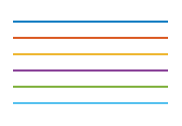
|
"beforecolor" | Cycle through the line styles of the
|
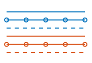
|
"withcolor" | Cycle through the line styles of the
|
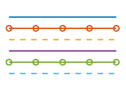
|
This property is read-only.
SeriesIndex value for the next plot object added to the axes,
returned as a whole number greater than or equal to 0. This property
is useful when you want to track how the objects cycle through the colors and line
styles. This property maintains a count of the objects in the axes that have a numeric
SeriesIndex property value. MATLAB uses it to assign a SeriesIndex value to each new
object. The count starts at 1 when you create the axes, and it
increases by 1 for each additional object. Thus, the count is
typically n+1, where n is the number of objects in
the axes.
If you manually change the ColorOrderIndex or
LineStyleOrderIndex property on the axes, the value of the
NextSeriesIndex property changes to 0. As a
consequence, objects that have a SeriesIndex property no longer
update automatically when you change the ColorOrder or
LineStyleOrder properties on the axes.
Properties to reset when adding a new plot to the axes, specified as one of these values:
'add'— Add new plots to the existing axes. Do not delete existing plots or reset axes properties before displaying the new plot.'replacechildren'— Delete existing plots before displaying the new plot. Reset theColorOrderIndexandLineStyleOrderIndexproperties to1, but do not reset other axes properties. The next plot added to the axes uses the first color and line style based on theColorOrderandLineStyleorder properties. This value is similar to usingclabefore every new plot.'replace'— Delete existing plots and reset axes properties, exceptPositionandUnits, to their default values before displaying the new plot.'replaceall'— Delete existing plots and reset axes properties, exceptPositionandUnits, to their default values before displaying the new plot. This value is similar to usingcla resetbefore every new plot.
Note
For
UIAxesobjects with only one y-axis, the'replace'and'replaceall'property values are equivalent. ForAxesobjects with two y-axes, the'replace'value affects only the active side while the'replaceall'value affects both sides.Passing a
UIAxesobject to theclafunction with the'reset'option sets theNextPlotproperty to'replace'unless you define a different default for theNextPlotproperty.
Figures created with the uifigure function also have
a NextPlot property. Alternatively, you can use the
newplot function to
prepare figures and axes for subsequent graphics commands.
Color and Transparency Maps
Box Styling
Color of plot area, specified as an RGB triplet, a hexadecimal color code,
a color name, or a short name. The color affects the area defined by the
InnerPosition property value.
For a custom color, specify an RGB triplet or a hexadecimal color code.
An RGB triplet is a three-element row vector whose elements specify the intensities of the red, green, and blue components of the color. The intensities must be in the range
[0,1], for example,[0.4 0.6 0.7].A hexadecimal color code is a string scalar or character vector that starts with a hash symbol (
#) followed by three or six hexadecimal digits, which can range from0toF. The values are not case sensitive. Therefore, the color codes"#FF8800","#ff8800","#F80", and"#f80"are equivalent.
Alternatively, you can specify some common colors by name. This table lists the named color options, the equivalent RGB triplets, and the hexadecimal color codes.
| Color Name | Short Name | RGB Triplet | Hexadecimal Color Code | Appearance |
|---|---|---|---|---|
"red" | "r" | [1 0 0] | "#FF0000" |
|
"green" | "g" | [0 1 0] | "#00FF00" |
|
"blue" | "b" | [0 0 1] | "#0000FF" |
|
"cyan"
| "c" | [0 1 1] | "#00FFFF" |
|
"magenta" | "m" | [1 0 1] | "#FF00FF" |
|
"yellow" | "y" | [1 1 0] | "#FFFF00" |
|
"black" | "k" | [0 0 0] | "#000000" |
|
"white" | "w" | [1 1 1] | "#FFFFFF" |
|
"none" | Not applicable | Not applicable | Not applicable | No color |
This table lists the default color palettes for plots in the light and dark themes.
| Palette | Palette Colors |
|---|---|
Before R2025a: Most plots use these colors by default. |
|
|
|
You can get the RGB triplets and hexadecimal color codes for these palettes using the orderedcolors and rgb2hex functions. For example, get the RGB triplets for the "gem" palette and convert them to hexadecimal color codes.
RGB = orderedcolors("gem");
H = rgb2hex(RGB);Before R2023b: Get the RGB triplets using RGB =
get(groot,"FactoryAxesColorOrder").
Before R2024a: Get the hexadecimal color codes using H =
compose("#%02X%02X%02X",round(RGB*255)).
Example: ax.Color = [0 0 1]
Example: ax.Color = 'blue'
Example: ax.Color = '#0000FF'
Color of margin around plot area, returned as 'none'.
Note
Setting this property has no effect.
Line width of axes outline, tick marks, and grid lines, specified as a positive numeric value in point units. One point equals 1/72 inch.
Example: ax.LineWidth = 1.5
Box outline, specified as 'on' or
'off', or as numeric or logical 1
(true) or 0
(false). A value of 'on' is
equivalent to true, and 'off' is
equivalent to false. Thus, you can use the value of this
property as a logical value. The value is stored as an on/off logical value
of type matlab.lang.OnOffSwitchState.
| Value | Description | 2-D Result | 3-D Result |
|---|---|---|---|
'on' | Display the box outline around the axes. For
3-D views, use the Example:
| 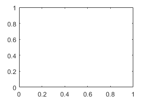 | 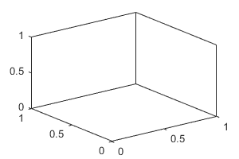 |
'off' | Do not display the box outline around the axes. Example:
| 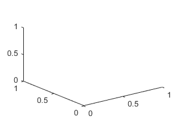 |
The XColor,
YColor, and ZColor properties
control the color of the outline.
Example: ax.Box = 'on'
Box outline style, specified as 'back' or
'full'. This property affects only 3-D views.
| Value | Description | Result |
|---|---|---|
'back' | Outline the back planes of the 3-D box. Example:
| |
'full' | Outline the entire 3-D box. Example:
| 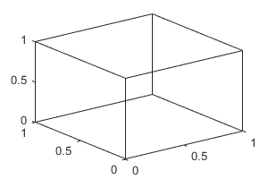 |
Clipping of objects to the axes limits, specified as
'on' or 'off', or as numeric or
logical 1 (true) or
0 (false). A value of
'on' is equivalent to true, and
'off' is equivalent to false.
Thus, you can use the value of this property as a logical value. The value
is stored as an on/off logical value of type matlab.lang.OnOffSwitchState.
The clipping behavior of an object within the Axes object depends on both the Clipping
property of the Axes object and the
Clipping property of the individual object. The
property value of the Axes object has
these effects:
'on'— Enable each individual object within the axes to control its own clipping behavior based on theClippingproperty value for the object.'off'— Disable clipping for all objects within the axes, regardless of theClippingproperty value for the individual objects. Parts of objects can appear outside of the axes limits. For example, parts can appear outside the limits if you create a plot, use thehold oncommand, freeze the axis scaling, and then add a plot that is larger than the original plot.
This table lists the results for different combinations of
Clipping property values.
| Clipping Property for Axes Object | Clipping Property for Individual Object | Result |
|---|---|---|
'on' | 'on' | Individual object is clipped. Others might or might not be. |
'on' | 'off' | Individual object is not clipped. Others might or might not be. |
'off' | 'on' | All objects are unclipped. |
'off' | 'off' | All objects are unclipped. |
Clipping boundaries, specified as one of the values in this table. If a plot contains markers, then as long as the data point lies within the axes limits, MATLAB draws the entire marker.
The ClippingStyle property has no effect if the
Clipping property is set to
'off'.
| Value | Descriptions | Illustration of Boundary Region |
|---|---|---|
'3dbox' | Clip plotted objects to the six sides of the axes box defined by the axis limits. Thick lines might display outside the axes limits. |
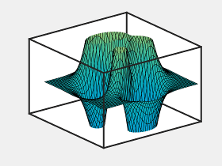
|
'rectangle' | Clip plotted objects to a rectangular boundary enclosing the axes in any given view. Clip thick lines at the axes limits. |
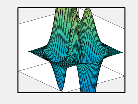
|
Background light color, specified as an RGB triplet, a hexadecimal color
code, a color name, or a short name. The background light is a directionless
light that shines uniformly on all objects in the axes. To add light, use
the light function.
For a custom color, specify an RGB triplet or a hexadecimal color code.
An RGB triplet is a three-element row vector whose elements specify the intensities of the red, green, and blue components of the color. The intensities must be in the range
[0,1], for example,[0.4 0.6 0.7].A hexadecimal color code is a string scalar or character vector that starts with a hash symbol (
#) followed by three or six hexadecimal digits, which can range from0toF. The values are not case sensitive. Therefore, the color codes"#FF8800","#ff8800","#F80", and"#f80"are equivalent.
Alternatively, you can specify some common colors by name. This table lists the named color options, the equivalent RGB triplets, and the hexadecimal color codes.
| Color Name | Short Name | RGB Triplet | Hexadecimal Color Code | Appearance |
|---|---|---|---|---|
"red" | "r" | [1 0 0] | "#FF0000" |
|
"green" | "g" | [0 1 0] | "#00FF00" |
|
"blue" | "b" | [0 0 1] | "#0000FF" |
|
"cyan"
| "c" | [0 1 1] | "#00FFFF" |
|
"magenta" | "m" | [1 0 1] | "#FF00FF" |
|
"yellow" | "y" | [1 1 0] | "#FFFF00" |
|
"black" | "k" | [0 0 0] | "#000000" |
|
"white" | "w" | [1 1 1] | "#FFFFFF" |
|
"none" | Not applicable | Not applicable | Not applicable | No color |
This table lists the default color palettes for plots in the light and dark themes.
| Palette | Palette Colors |
|---|---|
Before R2025a: Most plots use these colors by default. |
|
|
|
You can get the RGB triplets and hexadecimal color codes for these palettes using the orderedcolors and rgb2hex functions. For example, get the RGB triplets for the "gem" palette and convert them to hexadecimal color codes.
RGB = orderedcolors("gem");
H = rgb2hex(RGB);Before R2023b: Get the RGB triplets using RGB =
get(groot,"FactoryAxesColorOrder").
Before R2024a: Get the hexadecimal color codes using H =
compose("#%02X%02X%02X",round(RGB*255)).
Example: ax.AmbientLightColor = [1 0 1]
Example: ax.AmbientLightColor = 'magenta'
Example: ax.AmbientLightColor = '#FF00FF'
Position
Size and location of axes, including the labels and margins, specified as a four-element
vector of the form [left bottom width height]. This property is
equivalent to the OuterPosition property. The vector defines a
rectangle that encloses the outer bounds of the axes. The values are measured in the
units specified by the Units property, which defaults to pixels.
The
leftandbottomelements define the position of the rectangle, measured from the lower left corner of the parent container.The
widthandheightdefine the size of the rectangle.
If you want to specify the position and account for the text around the axes, then set
the either the Position or the OuterPosition
property. These figures show the areas defined by the Position (or
OuterPosition) in blue, and the
InnerPosition in red.
| 2-D View of Axes | 3-D View of Axes |
|---|---|
|
|


Note
Setting this property has no effect when the parent container is a
TiledChartLayout object.
Inner size and location, excluding labels and margins, specified as a
four-element vector of the form [left bottom width
height]. The values are measured in the units specified by the
Units property, which defaults to pixels.
The
leftandbottomelements define the position of the rectangle, measured from the lower left corner of the parent container.The
widthandheightdefine the size of the rectangle.
If you want to specify the position and account for the text around the
axes, then set the either the Position or the
OuterPosition property. These figures show the
areas defined by the Position (or
OuterPosition) in blue, and the
InnerPosition in red.
| 2-D View of Axes | 3-D View of Axes |
|---|---|
|
|
MATLAB automatically sets InnerPosition to the
largest possible values that conform to all other properties. Other UIAxes properties that affect the axes size and
shape include Position,
DataAspectRatio and
PlotBoxAspectRatio.
Note
When querying the inner position of axes with constrained aspect ratios (such as square axes or those containing images) consider using the
tightPositionfunction for more accuracy. (since R2022b)Setting this property has no effect when the parent container is a
TiledChartLayout
Size and location of the axes, including the labels and margins, specified
as a four-element vector of the form [left bottom width
height].
This property value is identical to the Position
property value.
This property is read-only.
Margin for text labels, returned as a four-element vector of the form
[left bottom right top]. The elements define the
distances between the bounds of the InnerPosition
property and the extent of the axes text labels and title. By default, the
values are measured in pixels. To change the units, set the
Units property.
Position property to hold constant when adding, removing, or changing decorations, specified as one of the following values:
"outerposition"— TheOuterPositionproperty remains constant when you add, remove, or change decorations such as a title or an axis label. If any positional adjustments are needed, MATLAB adjusts theInnerPositionproperty."innerposition"— TheInnerPositionproperty remains constant when you add, remove, or change decorations such as a title or an axis label. If any positional adjustments are needed, MATLAB adjusts theOuterPositionproperty.
Note
Setting this property has no effect when the parent container is a
TiledChartLayout object.
Position units, specified as one of these values.
Units | Description |
|---|---|
'normalized' | Normalized with respect to the container, which is
typically the figure or a panel. The lower left corner
of the container maps to (0,0) and
the upper right corner maps to
(1,1). |
'inches' | Inches. |
'centimeters' | Centimeters. |
'characters' | Based on the default uicontrol font of the graphics root object:
|
'points' | Typography points. One point equals 1/72 inch. |
'pixels' | On Windows and Macintosh systems, the size of a pixel is 1/96th of an inch. This size is independent of your system resolution. On Linux systems, the size of a pixel is determined by your system resolution. |
When specifying the units as a Name,Value pair during
object creation, you must set the Units property before
specifying the properties that you want to use these units, such as
Position.
Relative length of data units along each axis, specified as a
three-element vector of the form [dx dy dz]. This vector
defines the relative x, y, and
z data scale factors. For example, specifying this
property as [1 2 1] sets the length of one unit of data
in the x-direction to be the same length as two units of
data in the y-direction and one unit of data in the
z-direction.
Alternatively, use the daspect function to change
the data aspect ratio.
Example: ax.DataAspectRatio = [1 1 1]
Data Types: single | double | int8 | int16 | int32 | int64 | uint8 | uint16 | uint32 | uint64
Data aspect ratio mode, specified as one of these values:
'auto'— Automatically select values that make best use of the available space. IfPlotBoxAspectRatioModeandCameraViewAngleModeare also set to'auto', then enable "stretch-to-fill" behavior. Stretch the axes so that it fills the available space as defined by thePositionproperty.'manual'— Disable the "stretch-to-fill" behavior and use the manually specified data aspect ratio. To specify the values, set theDataAspectRatioproperty.
Relative length of each axis, specified as a three-element vector of the
form [px py pz] defining the relative
x-axis, y-axis, and
z-axis scale factors. The plot box is a box
enclosing the axes data region as defined by the axis limits.
Alternatively, use the pbaspect function to
change the data aspect ratio.
If you specify the axis limits, data aspect ratio, and plot box aspect ratio, then MATLAB ignores the plot box aspect ratio. It adheres to the axis limits and data aspect ratio.
Example: ax.PlotBoxAspectRatio = [1 0.75
0.75]
Data Types: single | double | int8 | int16 | int32 | int64 | uint8 | uint16 | uint32 | uint64
Selection mode for the PlotBoxAspectRatio property,
specified as one of these values:
'auto'— Automatically select values that make best use of the available space. IfDataAspectRatioModeandCameraViewAngleModealso are set to'auto', then enable "stretch-to-fill" behavior. Stretch theAxesobject so that it fills the available space as defined by thePositionproperty.'manual'— Disable the "stretch-to-fill" behavior and use the manually specified plot box aspect ratio. To specify the values, set thePlotBoxAspectRatioproperty.
Layout options, specified as a
GridLayoutOptions or
TiledChartLayoutOptions object. This property
specifies options when the axes is in a grid layout or a tiled chart layout.
If the axes is not in either type of layout, then this property is empty and
has no effect.
To position the axes in a specific row and column of a grid layout, set
the Row and Column properties on
the GridLayoutOptions object. For example, this code
places the axes in the third row and second column of a grid
layout.
g = uigridlayout([4 3]); ax = uiaxes(g); ax.Layout.Row = 3; ax.Layout.Column = 2;
To make the axes span multiple rows or columns, specify the
Row or Column property as a
two-element vector. For example, this axes spans columns
2 through
3:
ax.Layout.Column = [2 3];
View
Interactivity
Callbacks
Callback Execution Control
Parent/Child
Identifiers
Version History
Introduced in R2016aThe default ColorOrder, XColor,
YColor, and ZColor property values in
the light theme have changed slightly. This table lists the changes.
| Property | R2024b Color | R2025a Color | ||||||||||||||||||||||||||||||||
|---|---|---|---|---|---|---|---|---|---|---|---|---|---|---|---|---|---|---|---|---|---|---|---|---|---|---|---|---|---|---|---|---|---|---|
|
|
| ||||||||||||||||||||||||||||||||
XColor, YColor, and
ZColor |
|
|


Plot objects such as lines might not clip to the bounds defined by the
OuterPosition property of the UIAxes. The
lines extend beyond the bounds when the Clipping property of
each line is set to 'off'. In previous releases, the lines clip
to the OuterPosition regardless of the value of the
Clipping property. For example, the plot on the left shows
the R2020a behavior, and the plot on the right shows the R2020b behavior. In both
cases, the Clipping properties of the lines are set to
'off'.

To prevent the axes content from overlapping with components in your app, set the
Clipping property of each object in the axes to
'on'.